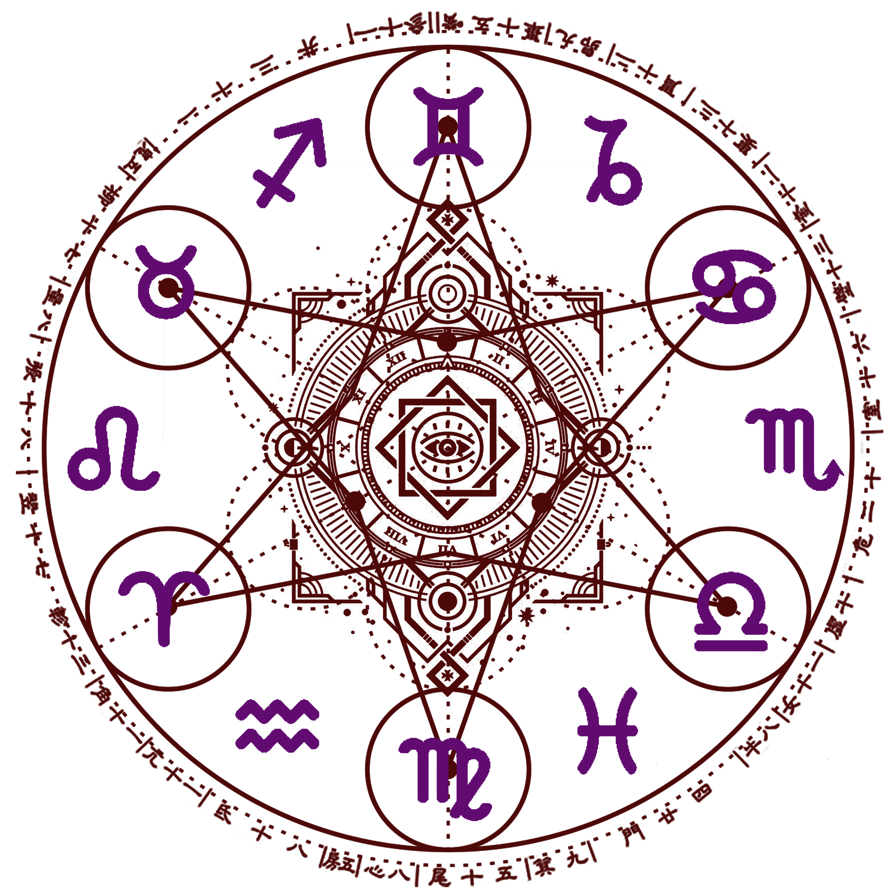

Таро та Астрологія
Головна
Реєстрація
Про Таро
Опитувальник
Новини
Введіть головне питання, яке вас цікавить
Задайте питання або оберіть з запропонованих
Чи була зрада?
Чи любить він(вона) мене?
Як пережити розрив?
Як підвищити доходи?
Чи змінювати роботу?
Що я не бачу у своєму житті?
Продовжити